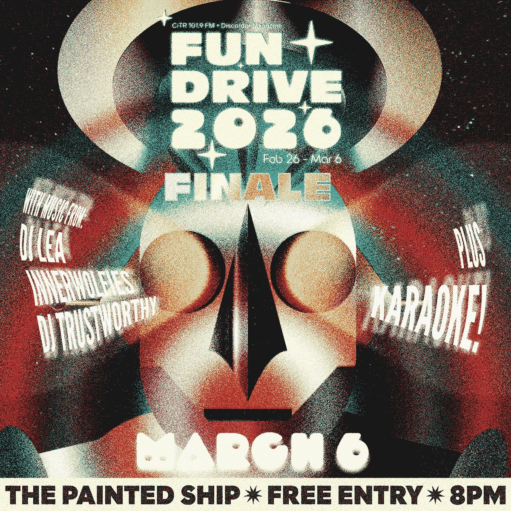
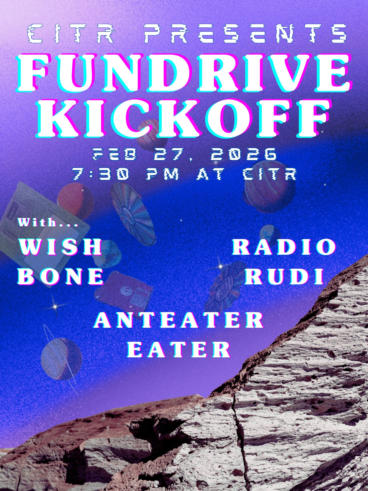
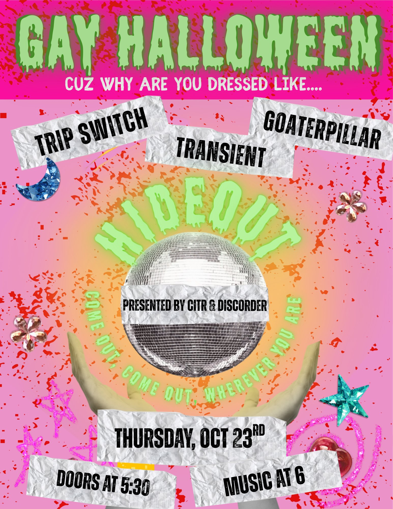
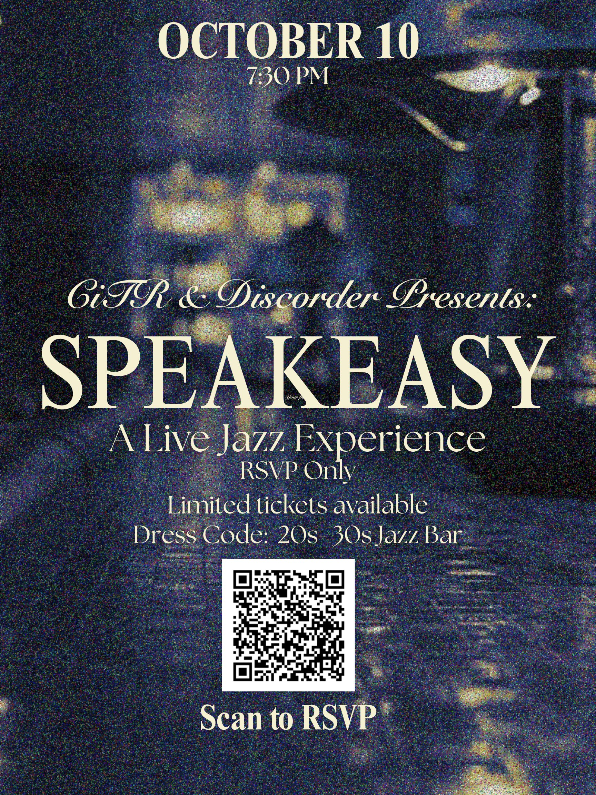
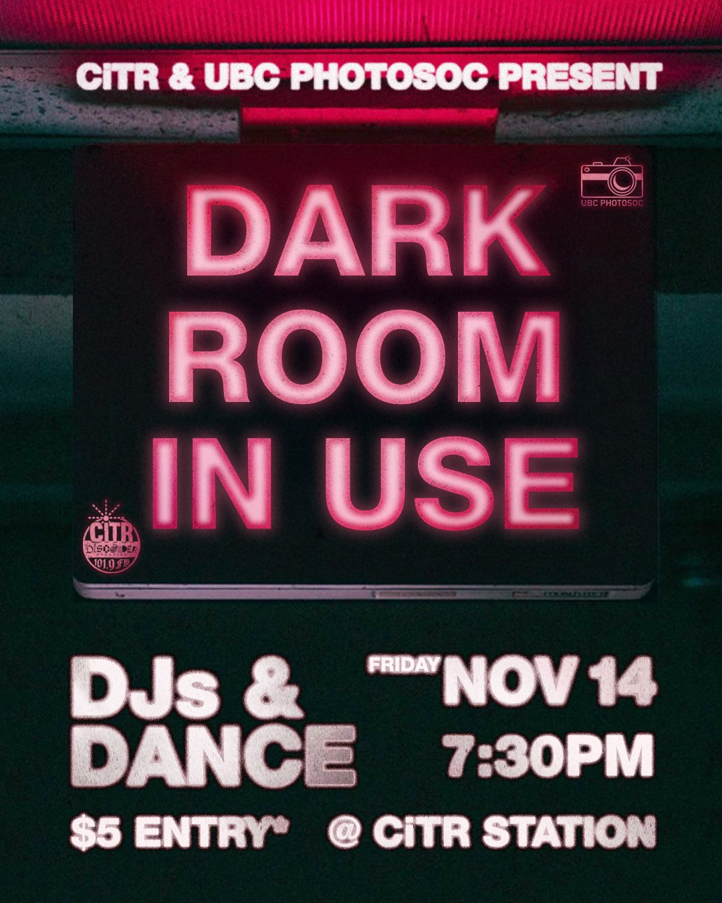
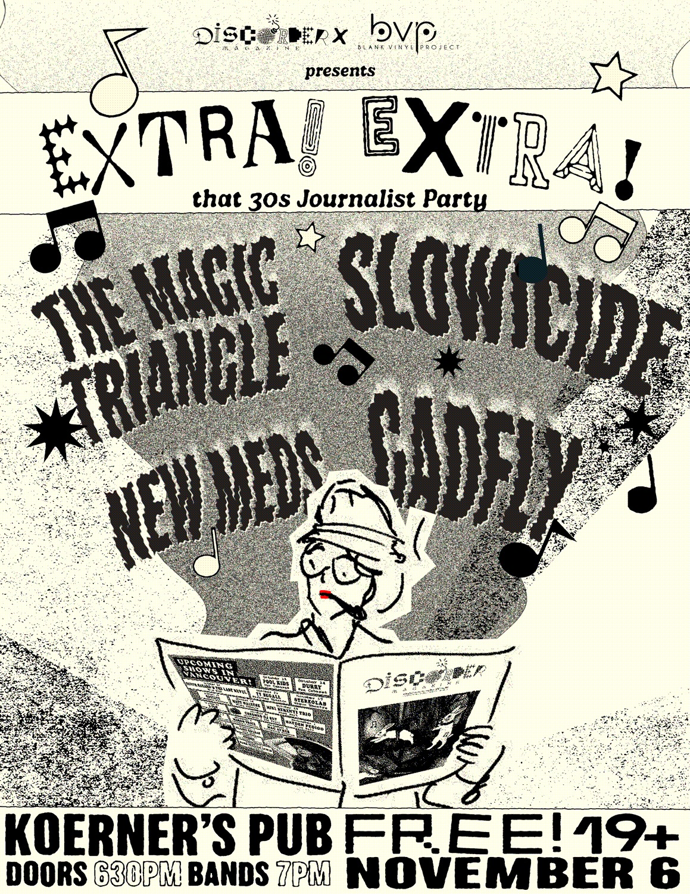
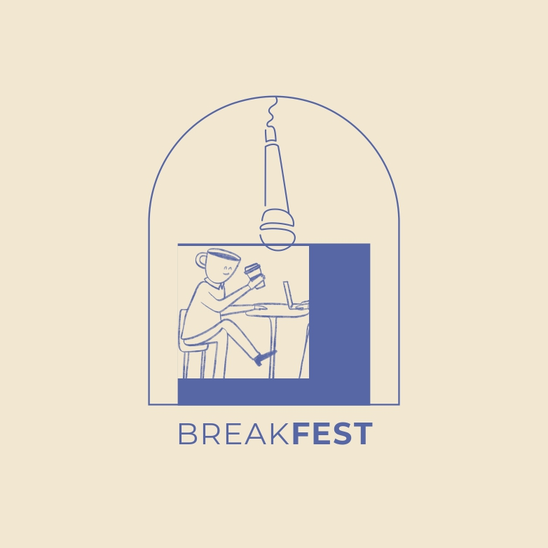
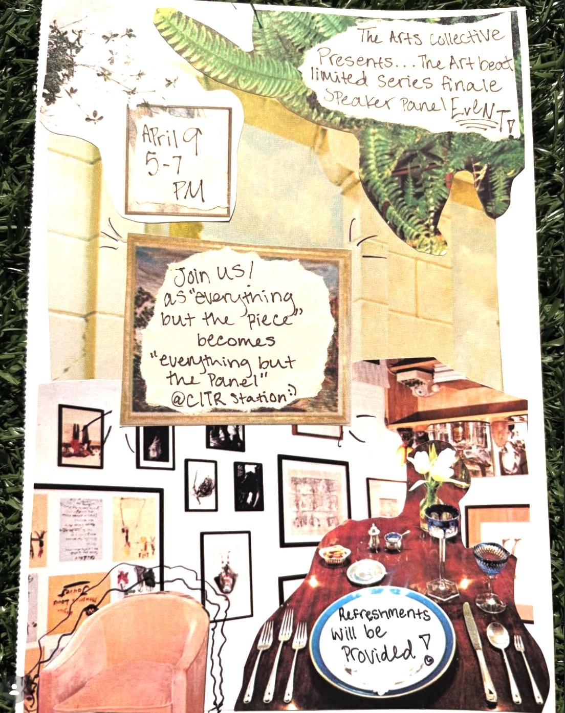
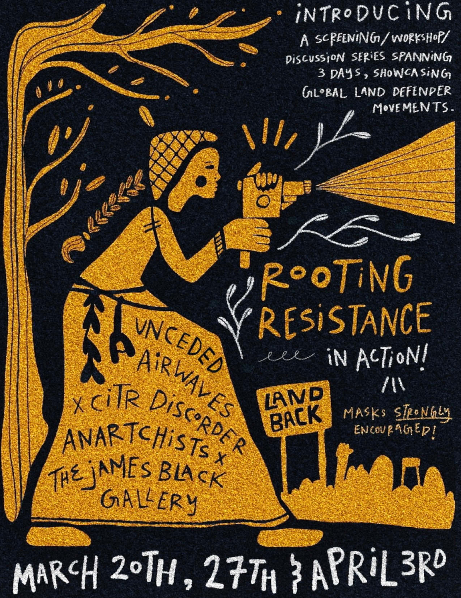

As Events Executive at CiTR 101.9 FM, I've spent the past year producing live programming across Vancouver — booking artists, managing teams, running sound, and seeing every event through from first promo to final night.








